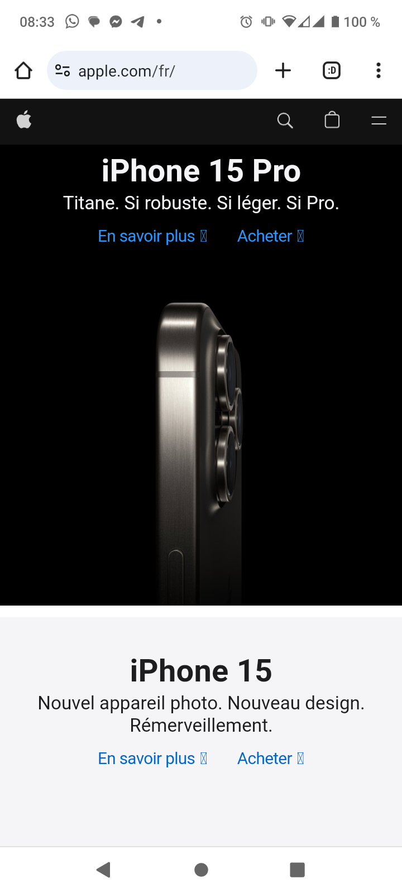

Visual Hierarchy
Apple
Apple Apple's website uses a clean and minimalist design with a clear visual hierarchy.
Large, high-quality images and bold typography draw attention to key products and messages.
The use of white space helps focus on individual elements.
Hick's Law
Google's search homepage is a prime example of simplicity and minimalism.
The main focus is a single search bar, with no distractions or unnecessary elements.
Users are presented with a clear, singular action: enter a search query.
Additional options (like Google Images, News, Gmail, etc.) are available but are kept hidden initially, reducing cognitive load for users who are primarily looking to perform a search.
Hick's Law
Youtube
YoutubeFitt's Law is a design principle that is more evident in the interactive elements and user interface design rather than the overall structure of a website.
YouTube's homepage and video player interface exhibit this principle.
The main call-to-action buttons, such as "Search," "Sign In," and "Create Account," are relatively large and positioned prominently at the top of the page.
Video thumbnails on the homepage and related videos are designed to be clickable, providing large and easily targetable areas.
The play/pause, volume control, and fullscreen buttons in the video player are sufficiently sized, making them easy to click.